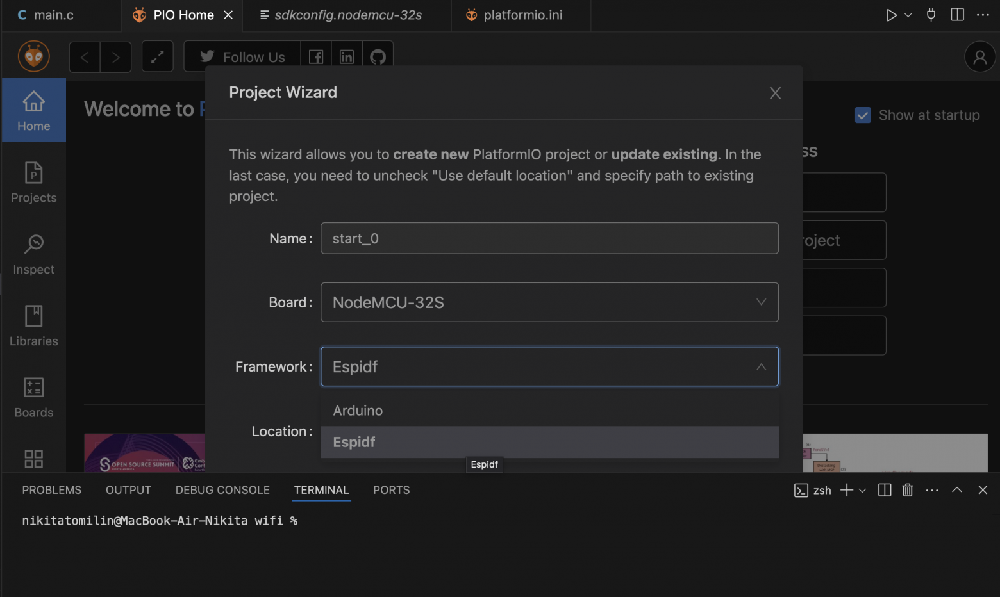
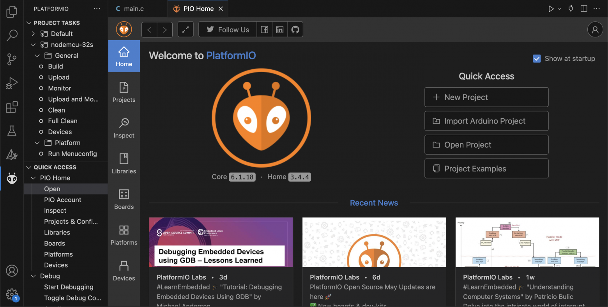
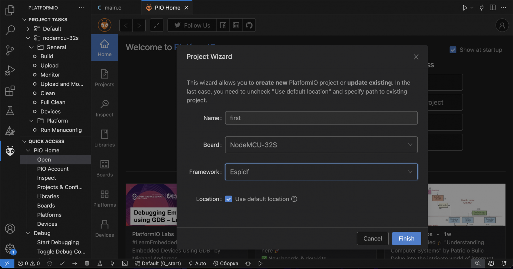
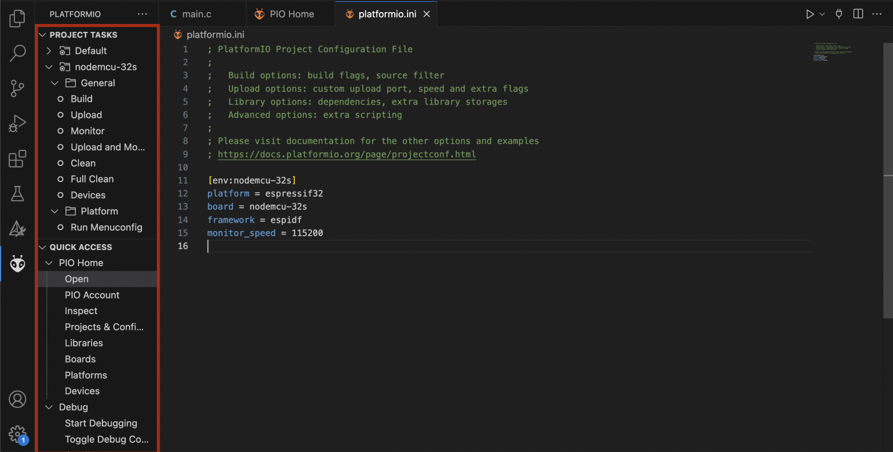
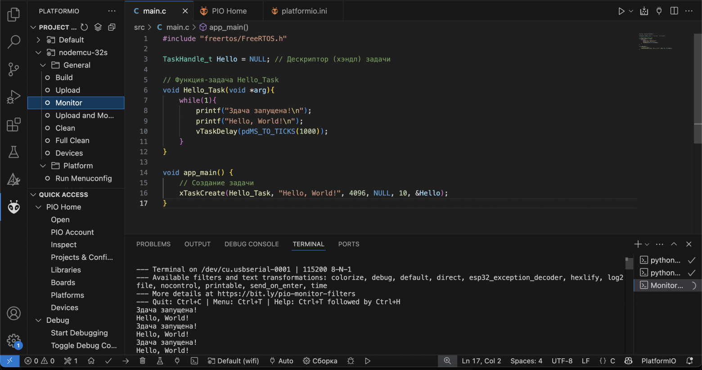
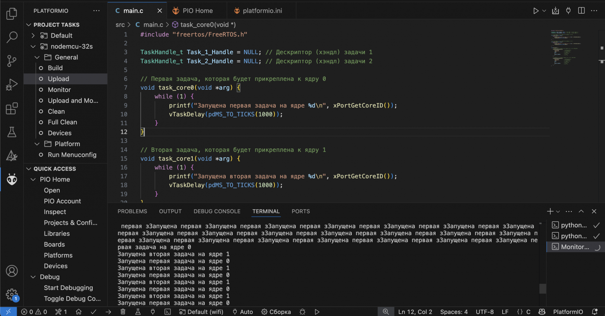

Программирование ES
P32 с ESP-IDF в среде platformio #0
Средний
6 мин7.4K
Программирование микроконтроллеров*DIY или Сделай самЭлектроника для начинающих
Туториал
Совсем недавно мне в руки попала плата ESP32 (NodeMCU‑32S). Ранее я уже работал с ESP8266 и даже создавал на ней небольшое веб‑приложение в режиме Station. Делал я всё это в Arduino IDE и был рад обнаружить расширение, которое позволяло организовать мой проект (да и просто в VS Code удобнее работать) — PlatformIO. Именно в PlatformIO я в первый раз увидел фреймворк ESP-IDF и начал потихоньку углубляться в эту тему.
Framework: ESP-IDF
Данная статья открывает цикл моих «шпаргалок» для всех новичков, которые, как и я, хотят погрузиться в мир систем реального времени на базе FreeRTOS. На просторах Хабра уже есть множество серий материалов по ESP‑IDF и FreeRTOS, но моя цель — простым языком поделиться собственным опытом разработки с помощью этого фреймворка. Сегодня мы разберём базовую терминологию и напишем «Hello, world!». Поехали!
Что же такое системы реального времени?
Система реального времени (RTOS) — это программное окружение, в котором критически важно выполнение задач в строго заданные сроки. RTOS следят за тем, чтобы важные задачи запускались точно в назначенный момент.
Зачем вообще нужна RTOS?
На первый взгляд, при разработке простой прошивки можно обойтись одним циклом while(1), в котором по очереди проверяются кнопки, мигает светодиод и обрабатываются события связи. Но уже при наличии нескольких событий (например, одновременной работы с UART, датчиками и Wi‑Fi) такой подход быстро становится хаотичным однотонным циклом — задачи начинают «спотыкаться» друг о друга, возникают задержки и трудно уловимые ошибки. Владимир Мединцев.
Без RTOS — вы вынуждены вручную следить за флагами, тайм-аутами и состояниями в одном потоке:
while (1) {
if (millis() - lastLED >= ledPeriod) { blinkLED(); lastLED = millis(); }
checkButtons();
processUART();
if (WiFi.ready()) handleWiFi();
}
С RTOS — каждая функция выделена в отдельную задачу с приоритетами, синхронизацией и детерминированным запуском:
xTaskCreate(buttonTask, "Buttons", 2048, NULL, 10, NULL);
xTaskCreate(ledTask, "LED", 2048, NULL, 5, NULL);
xTaskCreate(uartTask, "UART", 2048, NULL, 7, NULL);
xTaskCreate(wifiTask, "WiFi", 4096, NULL, 8, NULL);
RTOS обеспечивает:
Ключевые характеристики RTOS:
ESP‑IDF
ESP‑IDF (Espressif IoT Development Framework) — это официальная среда разработки от компании Espressif для микроконтроллеров серии ESP32 (а также ESP32‑Sx, ESP32‑C3 и др.). Она предоставляет всё необходимое для создания надёжных, многозадачных, сетевых и безопасных приложений «из коробки». В ESP-IDF ядро FreeRTOS уже встроено и полностью интегрировано в систему. В ESP‑IDF взаимодействие с “железом” (GPIO, I²C, SPI, UART, ADC, PWM и др.) организовано через набор API, тесно интегрированных с FreeRTOS.
Приведем немного общей терминологии:
1. Задачи (Tasks)
2. Хэндл задачи (Task Handle)
TaskHandle_t taskHandle; // Дескриптор (хэндл) задачи
xTaskCreate(..., &taskHandle); // Сохраняем хэндл
vTaskSuspend(taskHandle); // Приостанавливаем задачу
3. Приоритет задачи
4. Планировщик
Планировщик задач в ESP‑IDF — это часть встроенного ядра FreeRTOS, которая решает, какая из ваших “тасок” (задач) будет выполняться в каждый момент времени.
5. Задержка (Delay)
vTaskDelay(pdMS_TO_TICKS(1000)); // задержка 1000 мс
6. Очереди (Queues)
// Создание очереди на 10 элементов, с фиксированными размерами
QueueHandle_t queue = xQueueCreate(10, sizeof(int));
// Вставка нового элемента в очерель
// блокируя задачу при переполнении до тех пор, пока место не освободится или не выйдет таймаут.
xQueueSend(queue, &value, portMAX_DELAY);
// Удаление (сбор) элемента из очереди
//блокируя задачу при пустой очереди до появления данных или до истечения таймаута.
xQueueReceive(queue, &value, portMAX_DELAY);
7. Семафор (Semaphore)
8. Мьютекс (Mutex)
Установка и настройка PlatformIO для ESP‑IDF
PlatformIO — кросс‑платформенная среда разработки для встраиваемых систем, которая интегрируется с VS Code, CLion, Atom и другими IDE. Она упрощает управление SDK, зависимостями и сборкой проектов, в том числе на базе ESP‑IDF.
В расширениях VS Code устанавливаем PlatformIO. После перезапуска VS Code появится панель PlatformIO. Чтобы создать новый проект нажимаем на иконку PlatformIO в боковой панели (PIO Home).
PIO Home
Выбираем New Project. В поле Board выберете Вашу плату (у меня этоnodemcu-32s). В разделе Framework выбираем ESP-IDF.
Создание проекта
В корне создаётся файл platformio.ini. Минимальная конфигурация для ESP32 с ESP‑IDF выглядит так:
[env:nodemcu-32s]
platform = espressif32
board = nodemcu-32s
framework = espidf
monitor_speed = 115200
Также в PIO Home Нам представлены все инструменты для сборки, загрузки и отладки нашего МК:
Набор инструментов
Практика
Приступим к написанию простой задачи: эта задача будет уведомлять нас о том, что она запущена и следующей строкой печатать "Hello, World!".
TaskHandle_t Hello = NULL; // Дескриптор (хэндл) задачи
// Функция‑задача Hello_Task
void Hello_Task(void *arg){
while(1){
printf("Задача запущена!\n");
printf("Hello, World!\n");
vTaskDelay(pdMS_TO_TICKS(1000));
}
}
Hello - дескриптор (хэндл) задачи. Как было сказано выше, без хэндла мы не сможем напрямую управлять конкретной задачей. В данном примере мы не будем управлять жизненным циклом задачи (удаление, остановка задач), поэтому присваиваем NULL.
Hello_Task - функция задача. Содержит бесконечный цикл, без него задача сразу завершилась бы и была удалена планировщиком. Макрос pdMS_TO_TICKS(1000) конвертирует 1000 мс в количество тиков.
Напомним, что задачи создаются с помощьюxTaskCreate
xTaskCreate(
Hello_Task, // указатель на функцию‑задачу
"Hello, World!", // имя задачи (для отладки)
4096, // размер стека
NULL, // аргумент, передаваемый в функцию (здесь не нужен)
10, // приоритет задачи
&Hello // указатель, в который запишут дескриптор задачи
);
Результат:
#include "freertos/FreeRTOS.h"
#include "freertos/task.h
TaskHandle_t Hello = NULL; // Дескриптор (хэндл) задачи
// Функция‑задача Hello_Task
void Hello_Task(void *arg){
while(1){
printf("Задача запущена!\n");
printf("Hello, World!\n");
vTaskDelay(pdMS_TO_TICKS(1000));
}
}
void app_main() {
// Создание задачи
xTaskCreate(Hello_Task, "Hello, World!", 4096, NULL, 10, &Hello);
}
Hello, World!
Ядра
У ESP32 под капотом 2 ядра: PRO_CPU (ядро 0) и APP_CPU (ядро 1). Мы можем явно прописать при создании задачи какое ядро она будет использовать. Создадим 2 задачи, каждая задача будет на отдельном ядре. Функция xPortGetCoreID() поможет нам узнать текущее ядро, на котором выполняется задача.
В рамках ESP-IDF ядра Core 0 и Core 1 иногда обозначаются как PRO_CPU и APP_CPU соответственно. Эти псевдонимы отражают типичное распределение задач в приложениях.
Обычно задачи, отвечающие за обработку протоколов, таких как Wi‑Fi или Bluetooth, закрепляются за ядром 0 (PRO_CPU), а задачи, связанные с остальной частью приложения, — за ядром 1 (APP_CPU).
#include "freertos/FreeRTOS.h"
#include "freertos/task.h
TaskHandle_t Task_1_Handle = NULL; // Дескриптор (хэндл) задачи 1
TaskHandle_t Task_2_Handle = NULL; // Дескриптор (хэндл) задачи 2
// Первая задача, которая будет прикреплена к ядру 0
void task_core0(void *arg) {
while (1) {
printf("Запущена первая задача на ядре %d\n", xPortGetCoreID());
vTaskDelay(pdMS_TO_TICKS(1000));
}
}
// Вторая задача, которая будет прикреплена к ядру 1
void task_core1(void *arg) {
while (1) {
printf("Запущена вторая задача на ядре %d\n", xPortGetCoreID());
vTaskDelay(pdMS_TO_TICKS(1000));
}
}
void app_main() {
// Создаём первую задачу и прикрепляем её к ядру 0 (PRO_CPU)
xTaskCreatePinnedToCore(
task_core0, // функция‑задача
"TaskCore0", // имя задачи
2048, // размер стека
NULL, // аргумент
5, // приоритет
&Task_1_Handle, // хэндл
0 // ядро 0
);
// Создаём вторую задачу и пинним её к ядру 1 (APP_CPU)
xTaskCreatePinnedToCore(
task_core1, // функция‑задача
"TaskCore1", // имя задачи
2048, // размер стека
NULL, // аргумент
5, // приоритет
&Task_2_Handle, // хэндл
1 // ядро 1
);
}
Работа на двух ядрах
В следующей части мы подробно поработаем с GPIO и ISR: настроим выводы, организуем прерывания от кнопок и научимся обрабатывать события в режиме реального времени. Буду рад конструктивным замечаниям опытных разработчиков и любым вашим советам по улучшению материалов. До встречи в следующей части!
Теги:
Хабы:
+2986